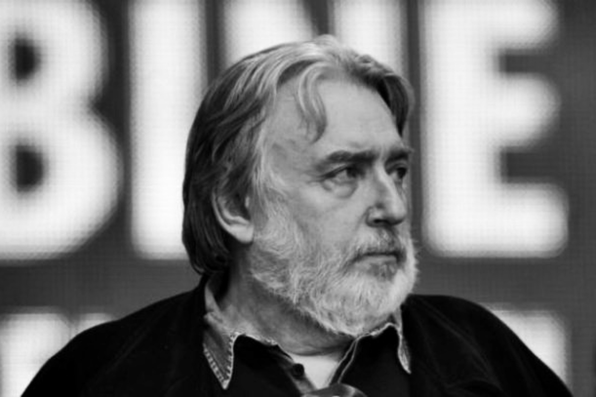
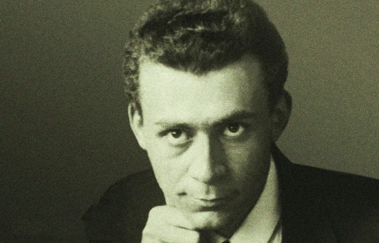
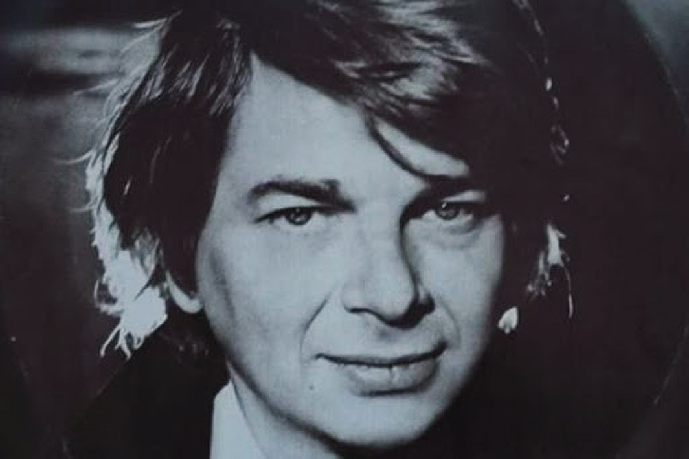
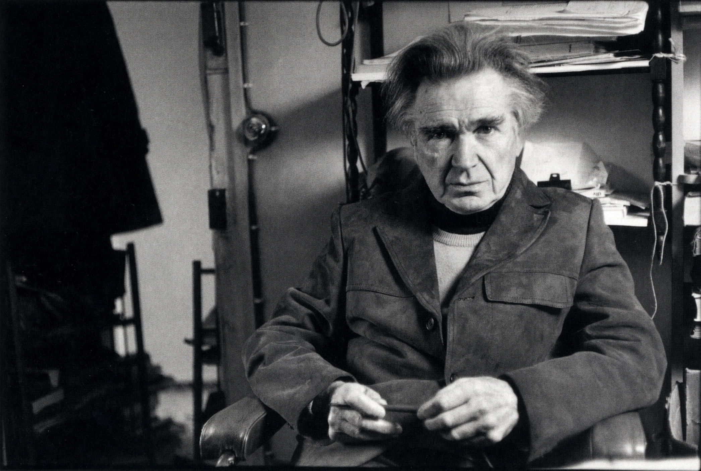

"Un scriitor e un om care exprimă în scris cu o liminară sinceritate
ceea ce a simțit, ceea ce a gândit, ceea ce i s-a întâmplat în
viața, lui și celor pe care i-a cunoscut, sau chiar obiectelor
neînsuflețite. Fără ortografie, fără compoziție, fără stil și chiar
fără caligrafie."
Camil Petrescu



